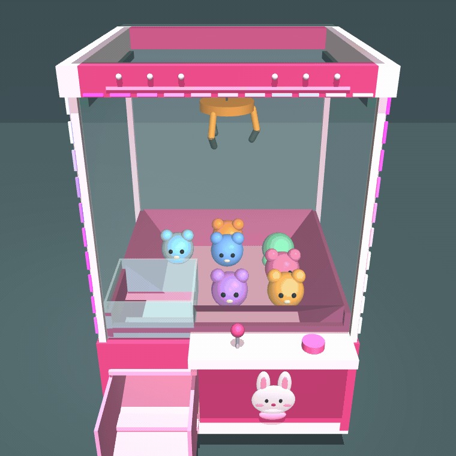

PickDoll 3주차 최종 결과
핑크 외장, 7개 랜덤 인형, 회전 집게와 소리·빛 효과를 갖춘 게임으로 마감했다.
3주차 최종 결과
- 외형 — 핑크 토끼 캐릭터 패널, 움직이는 제어봉과 버튼, 투명 충돌 벽, 상단·기둥 LED 띠를 완성했다.
- 조작 — 다섯 카메라, Shift 저속 이동, Ctrl 방향키 1mm 이동과 Z/X 집게 회전을 지원한다. 중심에서 2.5cm 안에 조준하면 중심을 보정한다.
- 집기와 배출 — 세 발을 연동하고 하강이 막히면 그 높이에서 잡는다. 상판 구멍과 경사 통로를 지나 인형이 기계 앞쪽 받침으로 나온다. 구멍 주변 투명 가이드는 굴러 들어오는 인형을 막는다.
- 인형과 효과 — 실행과 R 초기화마다 7개를 무작위 배치한다. 오리지널 배경음악과 버튼·집기·성공·실패 효과음, 획득 시 LED와 입자 효과를 추가했다.
- 최종 검증 — 고정 난수 배치에서 10판을 연속 진행해 획득 7회와 실패 3회를 확인했다. 미세 이동, 회전, LED, 초기화, 시간 초과와 음악·효과음 동시 재생도 확인했다. 이 수치는 지정한 시험 입력의 결과다.

2026년 11월 19일 사용자 플레이 피드백을 반영하고 현재 상태를 3주차 최종본으로 마감했다. 별도의 처음 사용하는 손님 테스트 결과는 수집하지 않았다.
실행과 조작
프로젝트 폴더에서 .\.venv\Scripts\python.exe pickdoll.py를 실행한다.
- 방향키로 조준하고 Shift로 천천히 이동한다. Ctrl 방향키는 한 번에 1mm 이동한다.
- Z/X로 집게를 회전하고 Enter로 자동 집기·배출을 시작한다.
- Tab 또는 1~5로 시점을 바꾼다. H로 수동 조작 안내를 펼친다.
- M은 음악, N은 효과음이다. R은 인형 7개를 새 위치에 배치하고 획득 수를 초기화한다.
오디오는 Windows에서 재생한다. 집게 줄은 시각 표현이고 승강은 슬라이드 관절로 계산한다. 인형은 둥근 강체다.
Further idea
웹 사이트
PC와 휴대폰에서 링크를 열어 플레이하는 버전을 검토한다. MuJoCo의 브라우저 실행 경로를 활용하고 Python 입력·진행 코드를 웹 환경으로 옮긴다. 터치 조이스틱, 뽑기·회전·카메라 버튼을 만들고 모바일 성능과 오디오 재생을 확인한다.
안드로이드 앱
웹에서 터치 조작을 검증한 뒤 설치형 앱으로 확장하는 방향을 검토한다. WebView로 웹 버전을 담는 방법을 비교하고 기기별 프레임 속도, 앱 전환·복귀, 소리 중단·재개와 오프라인 범위를 확인한다.
30 × 30cm 실물 제품
바닥 면적 30 × 30cm, 높이 40~45cm의 탁상형을 초기 설계 목표로 검토한다. 인형 폭 4~6cm와 집게 벌림 폭 6~8cm를 출발점으로 삼을 수 있다. 이 치수는 부품 선정 전 추정치이며 CAD 간섭 검토와 인양 시험으로 확정한다.
프레임·가이드·모터가 차지하는 폭을 빼고 조준 범위를 산정한다. 승강부와 하단 배출 통로 높이도 확보한다. 100g 인형을 유지하려면 집게 무게를 포함해 상승 모터와 그립을 검증한다. 현재의 원점 복귀·상태 전환·외형 컨셉을 실물 설계에 참고한다.
검토 순서는 웹 플레이와 모바일 조작 확인, 안드로이드 확장, 30cm 실물 치수 검토다. 후속 제작 착수와 일정은 추후 정한다.